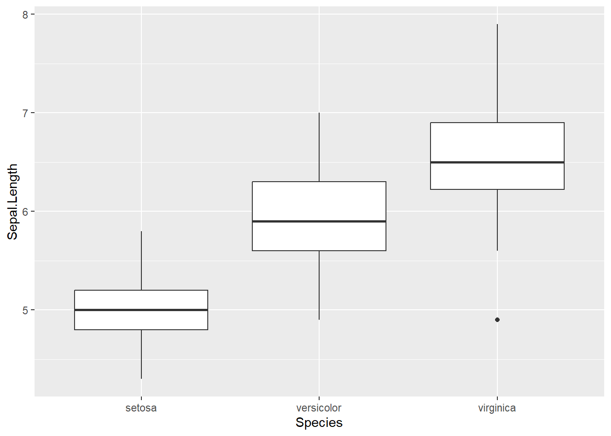
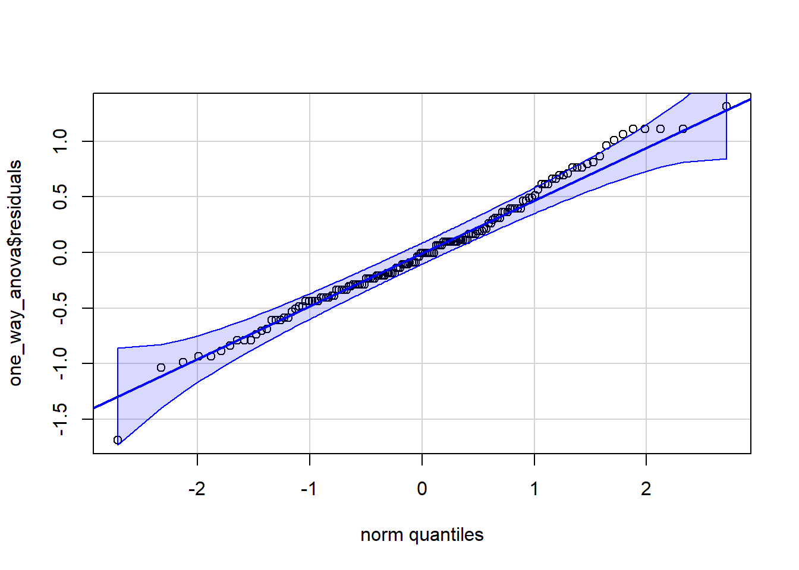

Normality - each sample is taken from a normally distributed population. Independance - each sample has been drawn independently of the other samples. Equal variance - variance of data in the different groups should be the same.
library(dplyr)
Attaching package: 'dplyr'
The following objects are masked from 'package:stats':
filter, lag
The following objects are masked from 'package:base':
intersect, setdiff, setequal, union
── Conflicts ────────────────────────────────────────── tidyverse_conflicts() ──
✖ dplyr::filter() masks stats::filter()
✖ dplyr::lag() masks stats::lag()
ℹ Use the conflicted package (<http://conflicted.r-lib.org/>) to force all conflicts to become errors
data(iris) dat <- iris %>%select(Species, Sepal.Length)summary(dat)
Species Sepal.Length
setosa :50 Min. :4.300
versicolor:50 1st Qu.:5.100
virginica :50 Median :5.800
Mean :5.843
3rd Qu.:6.400
Max. :7.900
ggplot(iris, aes(x = Species, y = Sepal.Length)) +geom_boxplot()

one_way_anova <-aov(Sepal.Length ~ Species , data = iris)summary(one_way_anova)
Df Sum Sq Mean Sq F value Pr(>F)
Species 2 63.21 31.606 119.3 <2e-16 ***
Residuals 147 38.96 0.265
---
Signif. codes: 0 '***' 0.001 '**' 0.01 '*' 0.05 '.' 0.1 ' ' 1
P −Value < 0.05. So, we reject H0. We can conclude that, there is a statistical difference between the mean of the sepal length according to the type of the iris plant at 5% level of significance.
Multiple Comparisons (POST-HOC TESTS)
If the test rejects H0 , the one-way ANOVA test does not inform which group has a different mean. Then run a pairwise t-test for multiple comparison and identify the different groups.
Pairwise comparisons using t tests with pooled SD
data: iris$Sepal.Length and iris$Species
setosa versicolor
versicolor 2.6e-15 -
virginica < 2e-16 8.3e-09
P value adjustment method: bonferroni
Based on P-values < 0.05, all the three species combinations are differ according to the Sepal Length.
There are several possible adjustment methods: “bonferroni”, “holm”, “hochberg”, “hommel”, “BH”
Tukey’s Honest Significant Differences (Tukey’s HSD) is also a very common test that we can use for multiple comparisons. It requires an anova object.
Pairwise comparisons using t tests with pooled SD
data: iris$Sepal.Length and iris$Species
setosa versicolor
versicolor 1.8e-15 -
virginica < 2e-16 2.8e-09
P value adjustment method: holm
TukeyHSD(one_way_anova)
Tukey multiple comparisons of means
95% family-wise confidence level
Fit: aov(formula = Sepal.Length ~ Species, data = iris)
$Species
diff lwr upr p adj
versicolor-setosa 0.930 0.6862273 1.1737727 0
virginica-setosa 1.582 1.3382273 1.8257727 0
virginica-versicolor 0.652 0.4082273 0.8957727 0
Check Normality Assumptions
Normality
Analyzing the ANOVA model residuals to check the normality for all groups together. This approach is easier and it’s very handy when you have many groups or if there are few data points per group.
Normality of residuals can be tested visually via a QQ-plot, and/or formally via a normality test (Shapiro-Wilk test).
library(car)
Loading required package: carData
Attaching package: 'car'
The following object is masked from 'package:purrr':
some
The following object is masked from 'package:dplyr':
recode
qqPlot(one_way_anova$residuals,id=FALSE)

H0 : data come from a normal distribution
H1 : data do not come from a normal distribution.
shapiro.test(one_way_anova$residuals)
Shapiro-Wilk normality test
data: one_way_anova$residuals
W = 0.9879, p-value = 0.2189
# p value > 0.05 and we do not reject H0 and conclude that the residulas follow approximately a normal distibution at 5% level of sgnificance.
Check normality for each group separately. This approach might be used when you have only a few groups and many data points per group.
The result will have an impact on whether we use the ANOVA or the Welch ANOVA.
We can formally test for equality of the variances with a Levene’s or Bartle ’s test. Notice that the Levene’s test is less sensitive to departures from normal distribution than the Bartle ’s test.
H0 : Variance are equal
H1 : at least one Variance is different
bartlett.test(Sepal.Length~Species,data = iris)
Bartlett test of homogeneity of variances
data: Sepal.Length by Species
Bartlett's K-squared = 16.006, df = 2, p-value = 0.0003345
leveneTest(Sepal.Length~Species,data = iris)
Levene's Test for Homogeneity of Variance (center = median)
Df F value Pr(>F)
group 2 6.3527 0.002259 **
147
---
Signif. codes: 0 '***' 0.001 '**' 0.01 '*' 0.05 '.' 0.1 ' ' 1
Welch One-Way ANOVA
The Welch One ANOVA test is an alternative to the standard one way ANOVA in the situation where the homogeneity of variance cant be assumed.
library(rstatix)
Attaching package: 'rstatix'
The following object is masked from 'package:stats':
filter
Two-Way ANOVA is an extension of One-Way ANOVA, used to examine the effect of two independent categorical variables on one continuous dependent variable — and also their interaction effect.
When to use Two-Way ANOVA:
You have two categorical independent variables (factors)
# A tibble: 6 × 6
gender education_level variable n mean sd
<fct> <fct> <fct> <dbl> <dbl> <dbl>
1 male school score 9 5.43 0.364
2 male college score 9 6.22 0.34
3 male university score 10 9.29 0.445
4 female school score 10 5.74 0.474
5 female college score 10 6.46 0.475
6 female university score 10 8.41 0.938
`summarise()` has grouped output by 'gender'. You can override using the
`.groups` argument.
# A tibble: 6 × 4
# Groups: gender [2]
gender education_level statistic p.value
<fct> <fct> <dbl> <dbl>
1 male school 0.980 0.966
2 male college 0.958 0.779
3 male university 0.916 0.323
4 female school 0.963 0.819
5 female college 0.963 0.819
6 female university 0.950 0.674
Bartlett test of homogeneity of variances
data: score by interaction(gender, education_level)
Bartlett's K-squared = 13.266, df = 5, p-value = 0.02101
leveneTest(score ~ gender * education_level, data = jobsatisfaction)
Levene's Test for Homogeneity of Variance (center = median)
Df F value Pr(>F)
group 5 2.197 0.06856 .
52
---
Signif. codes: 0 '***' 0.001 '**' 0.01 '*' 0.05 '.' 0.1 ' ' 1
POST-HOC TESTS IN TWO-WAY ANOVA
1. What does an interaction mean?
If the interaction is significant, it means:
👉 The effect of one factor depends on the level of the other factor.
Example:
Suppose Factor A = teaching method (Traditional, Online).
Factor B = gender (Male, Female).
Outcome = test score.
If there’s an interaction:
The teaching method effect might be strong for males but weak for females (or vice versa).
### 2. What to do next?
We don’t stop at “interaction is significant”. We **break it down**:
- **Simple main effect**:\
Look at Factor A’s effect **within each level** of Factor B.\
(e.g., compare Traditional vs Online **separately for males**, and then **separately for females**).
- **Simple pairwise comparisons**:\
If the simple main effect is significant, do **pairwise comparisons** to see *exactly which groups differ*.\
(e.g., for females, maybe Online is much higher than Traditional; for males, no difference).
### 1 step : group the data by gender and fit anovemodel <-lm(score ~ gender * education_level ,data =jobsatisfaction)jobsatisfaction %>%group_by(gender) %>%anova_test(score ~education_level ,error =model)
# A tibble: 6 × 10
gender term .y. group1 group2 df statistic p p.adj
* <fct> <chr> <chr> <chr> <chr> <dbl> <dbl> <dbl> <dbl>
1 male education_level score school college 52 -3.07 3.37e- 3 1.01e- 2
2 male education_level score school univer… 52 -15.3 6.87e-21 2.06e-20
3 male education_level score college univer… 52 -12.1 8.42e-17 2.53e-16
4 female education_level score school college 52 -2.94 4.95e- 3 1.49e- 2
5 female education_level score school univer… 52 -10.8 6.07e-15 1.82e-14
6 female education_level score college univer… 52 -7.90 1.84e-10 5.52e-10
# ℹ 1 more variable: p.adj.signif <chr>
There was a significant difference of job satisfaction score between all groups for both males and females.
If the two-way interaction is not statistically significant, you need to consult the main effect for each of the two variables (gender and education_level) in the ANOVA output
Pairwise comparisons using t tests with pooled SD
data: jobsatisfaction$score and jobsatisfaction$education_level
school college
college 0.00098 -
university < 2e-16 < 2e-16
P value adjustment method: bonferroni